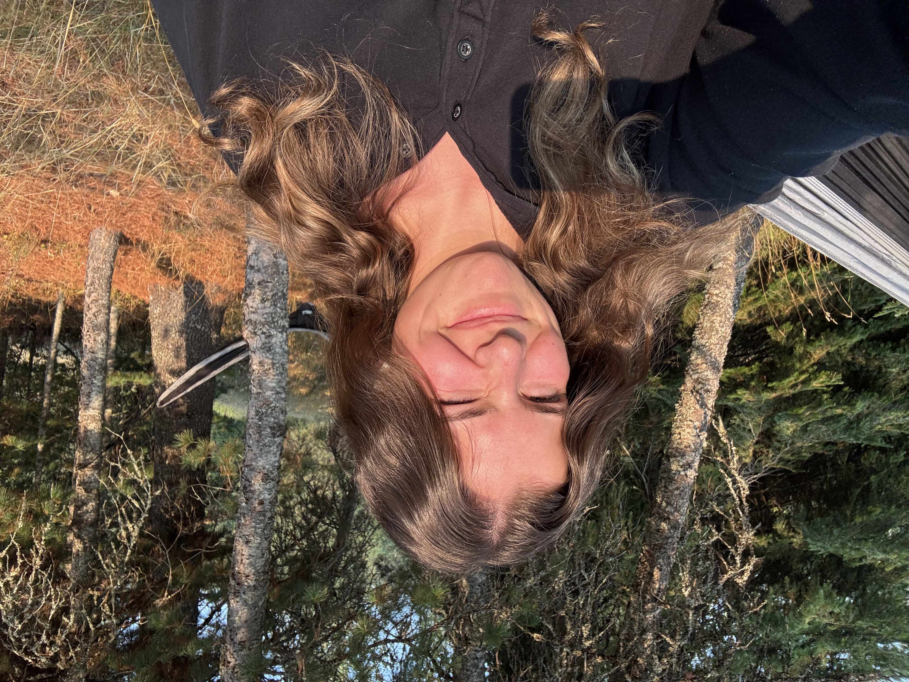
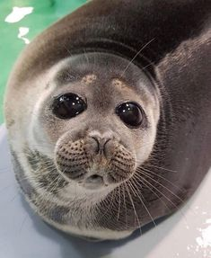
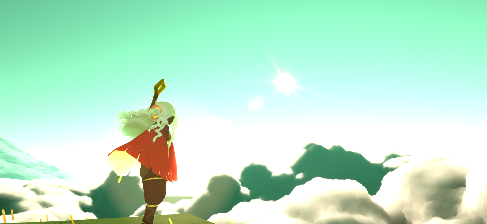

Morgan Speicher

Hello I'm Morgan! I love to sew and experiment with all kinds of crafts in my free time. I am a college student studying Media Arts with a focus in Motion Graphic Design. I love sci-fi movies and take a lot of my creative inspiration from them.

I also have a strange obsession for seals! They are such cute and obscenely round things that make me laugh a lot. I have lots of seal plushies and other merchandise, you could call them my spirit animal.

Pictured above is a screenshot I took from my favorite game, Sky: Children of the Light. I have great memories meeting people who I'm still friends with on Instagram today. While I don't play much anymore, everytime I return to the game it brings me back to my middle school / high school days in a comforting nostalgic way.